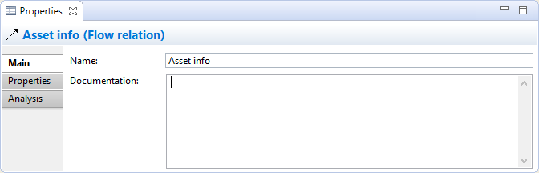
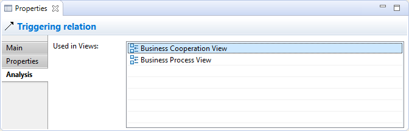

Selecting a relationship in the Model Tree or in a View means that you can edit or view the following model properties in the Properties Window. See Relationship Connection Appearance Properties for visual properties when the relationship is selected in a View.
The Main Tab
Editing the "Main" Properties for an ArchiMate Relationship
| Specialization: | Select the Specialization for this ArchiMate relationship. The button to the right of the drop-down control will open the Specializations Manager. |
| Name: | The name of the relationship. If provided, this will be displayed next to the connection in a View. |
| Documentation: | A space to enter some user documentation relating to the relationship. |
 In the "Documentation" text control, URLs that start with "http://" "https://" or "ftp://" will show as a hyperlink. Holding the Ctrl / Command key will change the cursor to a "hand" cursor and you can open the link in a Browser.
In the "Documentation" text control, URLs that start with "http://" "https://" or "ftp://" will show as a hyperlink. Holding the Ctrl / Command key will change the cursor to a "hand" cursor and you can open the link in a Browser.
The Association relationship type has an additional property:
| Directed: | Can be set to directed or non-directed. Setting this also changes the connection's arrow-head. |
The Access relationship type has an additional property:
| Access Type: | Can be set to "Access", "Read", "Write" or "Read/Write". Setting this also changes the connection's arrow-heads. |
The Influence relationship type has an additional property:
| Strength: | Can be set to an appropriate value such as "+", "++", "+++", "-", "--", "---". |
The Properties Tab
For more information about creating and managing User Properties see User Properties.
The Analysis Tab
Viewing the "Analysis" Properties for an ArchiMate Relationship
| Used in Views: | A table showing the Views (if any) where the selected relationship is used (displayed in a diagram). Double-clicking on an entry in the table will open the View and select the relationship (connection) in the diagram. |
| Model Relations: | A table showing the relationships (if any) to and from the selected relationship in the model. Double-clicking on an entry in the table will select the relationship in the Model Tree window if it is open. Note - if the relationship has no incoming or outgoing relationships, the table will be empty. |